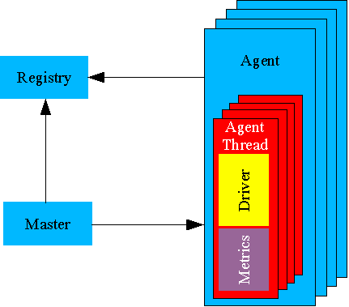

The
Faban driver framework utilizes a distributed architecture allowing
distributing the driver workload to multiple machines. It uses the J2SE
RMI facilities for all remote communication. Being able to distribute
driver load across systems is important as in sophisticated workloads
the driver can become the bottleneck.
The Registry registers all the Agents so that the Master can find them and distribute the tasks to them. The registry must run on the master machine. There is only one instance of the registry in a benchmark configuration.
The Master starts, stops and collects the metrics for each of the benchmark runs. It also provides services to collect runtime metrics, do a benchmark health check, and to cancel the benchmark run prematurely. There is only one instance of the master in a benchmark configuration and the master must run on the same machine as the registry.
The Agent is the process that actually drives the load. It will create threads as instructed by the master and drive the load for the length of time or number of iterations as instructed by the master. Each of the agent threads simulate a single client or user to the system under test (SUT). These threads will instantiate the developer-supplied driver, collect metrics, and aggregate and propagate them back to the master for final processing and reporting.
The Agent Thread is created by the agent to simulate a single user executing an instance of the driver. The agent thread executes the workload and handles all timing functions and operation selections on the driver, and collects all the standard metrics.
The Driver is a developer-supplied class that describes the workload and contains all the logic defining how to talk to the system under test. It provides a grouping of all conversation scenarios, each of them provided in form of an operation. The selection of the scenarios is descriptively specified in the driver but actually controlled by the agent.
The Benchmark is a grouping of one or more drivers. The benchmark result or metric is an aggregation of the driver metrics and are reported as one final metric.
The standard Metrics object collects all the common statistics of a benchmark run. Faban provides an extension mechanism which allows a developer to specify custom metrics that may not be covered by the standard ones.
The following diagram shows the significant components of the driver:

The single-process driver shines for it's simplicity. It can be run using a single Java process which controls the benchmark execution from beginning to end. The registry is not needed for the single process driver. Both the master and agent run inside a single process visible to the operating system. This simplicity also makes it extremely easy to run the single-process driver in a debugging environment such as an IDE and makes it useful for testing components of more complex drivers in such an environment.
The single-process driver is started by starting the master. If the master does not find the registry, it will assume a single-process driver is intended. The master will start a single agent in-process and drive the benchmark directly from this driver process.
The
single-process driver is limited to one running driver and one agent in
the benchmark, hence single-process. If the benchmark has multiple
drivers, only one driver can be enabled in the configuration file. If
the driver configurations are not specified, the defining driver is the
default driver. The defining driver is the driver that contains the
BenchmarkDefinition annotation and is referred with the “definition”
attribute on the configuration file.
The multi-process driver uses the full potential of the Faban driver framework. It allows components of the benchmark to scale across multiple processes and, typically, across multiple systems. The multi-process driver requires separate starting of all the Faban driver framework processes.
To start the multi-process driver, you'll need the start the registry, all the agents, and the master, consequently. The registry and the master needs to be started on the same system. This is called the master system. The master system may run any number of agents or may not run any of the agents at all. In other words, the master system may or may not drive the load by itself. The Faban harness, when used, generally helps reduce the complexity of the registry, agents, and master startup. and control sequences.